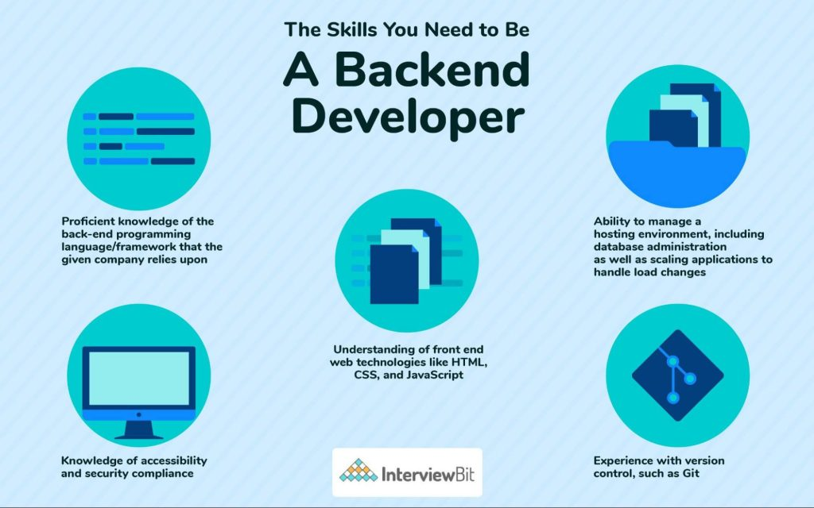

Le Développeur Back-End est en charge de l’ensemble des fonctionnalités d’un site web. A la différence du Développeur Front-End, le Développeur Back-End ne s’occupe pas de l’aspect ergonomique du site mais de l’aspect technique et fonctionnel. Il travaille dans l’ombre. Il peut concevoir un site web et dans ce cas réaliser lui-même l’architecture technique du site ; ou bien rester sur la plateforme instaurée et adapter des solutions techniques sur celle-ci.
|  |